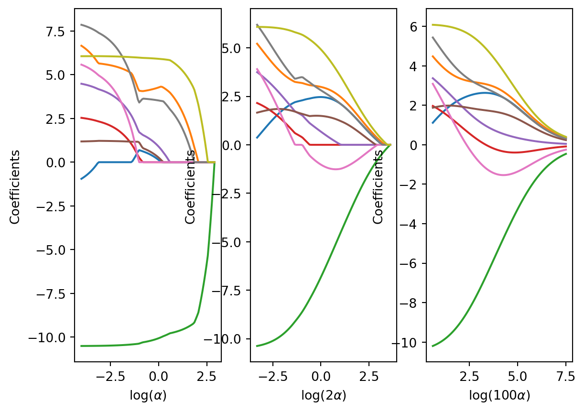

import pandas as pd
import numpy as np
import matplotlib.pyplot as plt
from sklearn.linear_model import Ridge, ElasticNet, Lasso
from sklearn.linear_model import RidgeCV, ElasticNetCV, LassoCV
from sklearn.preprocessing import StandardScaler
from sklearn.linear_model import LinearRegression
from sklearn.pipeline import Pipeline
from sklearn.model_selection import KFold
from patsy import dmatrix9 Régularisation des moindres carrés : ridge, lasso elastic net
Introduction
Problème du centrage-réduction
Propriétés des estimateurs
Régularisation avec le package scikitlearn
ozone = pd.read_csv("../donnees/ozone.txt", header = 0, sep = ";", index_col=0)
X = ozone.iloc[:,1:10].to_numpy()
y = ozone["O3"].to_numpy()cr = StandardScaler()
kf = KFold(n_splits=10, shuffle=True, random_state=0)lassocv = LassoCV(cv=kf)
enetcv = ElasticNetCV(cv=kf)
pipe_lassocv = Pipeline(steps=[("cr", cr), ("lassocv", lassocv)])
pipe_enetcv = Pipeline(steps=[("cr", cr), ("enetcv", enetcv)])pipe_lassocv.fit(X, y)
pipe_enetcv.fit(X, y)Pipeline(steps=[('cr', StandardScaler()),
('enetcv',
ElasticNetCV(cv=KFold(n_splits=10, random_state=0, shuffle=True)))])In a Jupyter environment, please rerun this cell to show the HTML representation or trust the notebook. On GitHub, the HTML representation is unable to render, please try loading this page with nbviewer.org.
Pipeline(steps=[('cr', StandardScaler()),
('enetcv',
ElasticNetCV(cv=KFold(n_splits=10, random_state=0, shuffle=True)))])StandardScaler()
ElasticNetCV(cv=KFold(n_splits=10, random_state=0, shuffle=True))
etape_lassocv = pipe_lassocv.named_steps["lassocv"]
etape_enetcv = pipe_enetcv.named_steps["enetcv"]alphasridge = etape_lassocv.alphas_ * 100
ridgecv = RidgeCV(cv=kf, alphas=alphasridge)pipe_ridgecv = Pipeline(steps=[("cr", cr), ("ridgecv", ridgecv)])
pipe_ridgecv.fit(X, y)Pipeline(steps=[('cr', StandardScaler()),
('ridgecv',
RidgeCV(alphas=array([1.82214402e+03, 1.69933761e+03, 1.58480794e+03, 1.47799719e+03,
1.37838513e+03, 1.28548658e+03, 1.19884909e+03, 1.11805068e+03,
1.04269780e+03, 9.72423459e+02, 9.06885373e+02, 8.45764334e+02,
7.88762649e+02, 7.35602686e+02, 6.86025527e+02, 6.39789702e+02,
5.96670018e+02, 5.56456456e+02, 5.18953...
6.86025527e+00, 6.39789702e+00, 5.96670018e+00, 5.56456456e+00,
5.18953153e+00, 4.83977447e+00, 4.51358987e+00, 4.20938902e+00,
3.92569029e+00, 3.66111190e+00, 3.41436521e+00, 3.18424843e+00,
2.96964074e+00, 2.76949689e+00, 2.58284207e+00, 2.40876716e+00,
2.24642431e+00, 2.09502283e+00, 1.95382531e+00, 1.82214402e+00]),
cv=KFold(n_splits=10, random_state=0, shuffle=True)))])In a Jupyter environment, please rerun this cell to show the HTML representation or trust the notebook. On GitHub, the HTML representation is unable to render, please try loading this page with nbviewer.org.
Pipeline(steps=[('cr', StandardScaler()),
('ridgecv',
RidgeCV(alphas=array([1.82214402e+03, 1.69933761e+03, 1.58480794e+03, 1.47799719e+03,
1.37838513e+03, 1.28548658e+03, 1.19884909e+03, 1.11805068e+03,
1.04269780e+03, 9.72423459e+02, 9.06885373e+02, 8.45764334e+02,
7.88762649e+02, 7.35602686e+02, 6.86025527e+02, 6.39789702e+02,
5.96670018e+02, 5.56456456e+02, 5.18953...
6.86025527e+00, 6.39789702e+00, 5.96670018e+00, 5.56456456e+00,
5.18953153e+00, 4.83977447e+00, 4.51358987e+00, 4.20938902e+00,
3.92569029e+00, 3.66111190e+00, 3.41436521e+00, 3.18424843e+00,
2.96964074e+00, 2.76949689e+00, 2.58284207e+00, 2.40876716e+00,
2.24642431e+00, 2.09502283e+00, 1.95382531e+00, 1.82214402e+00]),
cv=KFold(n_splits=10, random_state=0, shuffle=True)))])StandardScaler()
RidgeCV(alphas=array([1.82214402e+03, 1.69933761e+03, 1.58480794e+03, 1.47799719e+03,
1.37838513e+03, 1.28548658e+03, 1.19884909e+03, 1.11805068e+03,
1.04269780e+03, 9.72423459e+02, 9.06885373e+02, 8.45764334e+02,
7.88762649e+02, 7.35602686e+02, 6.86025527e+02, 6.39789702e+02,
5.96670018e+02, 5.56456456e+02, 5.18953153e+02, 4.83977447e+02,
4.51358987e+02, 4.20938902e+0...
6.86025527e+00, 6.39789702e+00, 5.96670018e+00, 5.56456456e+00,
5.18953153e+00, 4.83977447e+00, 4.51358987e+00, 4.20938902e+00,
3.92569029e+00, 3.66111190e+00, 3.41436521e+00, 3.18424843e+00,
2.96964074e+00, 2.76949689e+00, 2.58284207e+00, 2.40876716e+00,
2.24642431e+00, 2.09502283e+00, 1.95382531e+00, 1.82214402e+00]),
cv=KFold(n_splits=10, random_state=0, shuffle=True))etape_ridgecv = pipe_ridgecv.named_steps["ridgecv"]alphas = pipe_lassocv.named_steps["lassocv"].alphas_
coefs_lasso = []; coefs_enet = []; coefs_ridge = []
Xcr = StandardScaler().fit(X).transform(X)
for a in alphas:
## lasso
lasso = Lasso(alpha=a, warm_start=True).fit(Xcr, y)
coefs_lasso.append(lasso.coef_)
## enet
enet = ElasticNet(alpha=a*2, warm_start=True).fit(Xcr, y)
coefs_enet.append(enet.coef_)
## ridge
ridge = Ridge(alpha=a*100).fit(Xcr, y)
coefs_ridge.append(ridge.coef_)
fig, (ax1, ax2, ax3) = plt.subplots(1, 3)
ax1.plot(np.log(alphas), coefs_lasso)
ax1.set_xlabel(r'$\log(\alpha)$')
ax1.set_ylabel('Coefficients')
ax2.plot(np.log(2*alphas), coefs_enet)
ax2.set_xlabel(r'$\log(2\alpha)$')
ax2.set_ylabel('Coefficients')
ax3.plot(np.log(100*alphas), coefs_ridge)
ax3.set_xlabel(r'$\log(100\alpha)$')
ax3.set_ylabel('Coefficients')Text(0, 0.5, 'Coefficients')
print("Lasso: ", round(etape_lassocv.alpha_,4))
print("ElasticNet: ", round(etape_enetcv.alpha_,4))
print("Ridge: ", round(etape_ridgecv.alpha_,4))Lasso: 0.7356
ElasticNet: 0.3399
Ridge: 9.0689ozone = pd.read_csv("../donnees/ozone.txt", header = 0, sep = ";", index_col=0)
Xapp = ozone.iloc[0:45,1:10].to_numpy()
Xnew = ozone.iloc[45:50,1:10].to_numpy()
yapp = np.ravel(ozone.iloc[0:45,:1])
ynew = np.ravel(ozone.iloc[45:50,:1])kf = KFold(n_splits=10, shuffle=True, random_state=0)
cr = StandardScaler()
lassocv = LassoCV(cv=kf)
pipe_lassocv = Pipeline(steps=[("cr", cr), ("lassocv", lassocv)])
pipe_lassocv.fit(Xapp,yapp)Pipeline(steps=[('cr', StandardScaler()),
('lassocv',
LassoCV(cv=KFold(n_splits=10, random_state=0, shuffle=True)))])In a Jupyter environment, please rerun this cell to show the HTML representation or trust the notebook. On GitHub, the HTML representation is unable to render, please try loading this page with nbviewer.org.
Pipeline(steps=[('cr', StandardScaler()),
('lassocv',
LassoCV(cv=KFold(n_splits=10, random_state=0, shuffle=True)))])StandardScaler()
LassoCV(cv=KFold(n_splits=10, random_state=0, shuffle=True))
pipe_lassocv.predict(Xnew)array([95.81725767, 63.675633 , 67.49560903, 67.57922292, 89.43629205])Intégration de variables qualitatives
ozone = pd.read_csv("../donnees/ozone.txt", header=0, sep=";", index_col=0)
ozone["vent"]=ozone["vent"].astype("category")
ozone["nebu"]=ozone["nebu"].astype("category")kf = KFold(n_splits=10, shuffle=True, random_state=0)
cr = StandardScaler()
lassocv = LassoCV(cv=kf)
enetcv = ElasticNetCV(cv=kf)
pipe_lassocv = Pipeline(steps=[("cr", cr), ("lassocv", lassocv)])noms = list(ozone.iloc[:, 1:].columns)
formule = "~" + "+".join(noms[0:])
Xq = dmatrix(formule, ozone, return_type="dataframe")
Xapp = Xq.iloc[0:45, 1:].to_numpy()
Xnew = Xq.iloc[45:50, 1:].to_numpy()
yapp = np.ravel(ozone.iloc[0:45,:1])
ynew = np.ravel(ozone.iloc[45:50,:1])pipe_lassocv.fit(Xapp, yapp)
pipe_lassocv.predict(Xnew).round(2)array([97.41, 63.72, 66.26, 66.76, 90.23])formule = "~" + "+".join(noms[0:]) + "+C(vent,Treatment(1))"
Xq = dmatrix(formule,ozone,return_type="dataframe")
Xapp = Xq.iloc[0:45,1:].to_numpy()
Xnew = Xq.iloc[45:50,1:].to_numpy()
yapp = np.ravel(ozone.iloc[0:45,:1])
ynew = np.ravel(ozone.iloc[45:50,:1])
pipe_lassocv.fit(Xapp,yapp)
pipe_lassocv.predict(Xnew).round(2)array([97.92, 63.63, 65.91, 66.42, 90.29])formule = "~" + "+".join(noms[0:-2]) + \
"+ C(nebu, Sum) + C(vent, Sum)"
Xq = dmatrix(formule,ozone,return_type="dataframe")
Xapp = Xq.iloc[0:45,1:].to_numpy()
Xnew = Xq.iloc[45:50,1:].to_numpy()
yapp = np.ravel(ozone.iloc[0:45,:1])
ynew = np.ravel(ozone.iloc[45:50,:1])
pipe_lassocv.fit(Xapp,yapp)
pipe_lassocv.predict(Xnew).round(2)array([99.49, 63.82, 65.65, 66.18, 90.31])